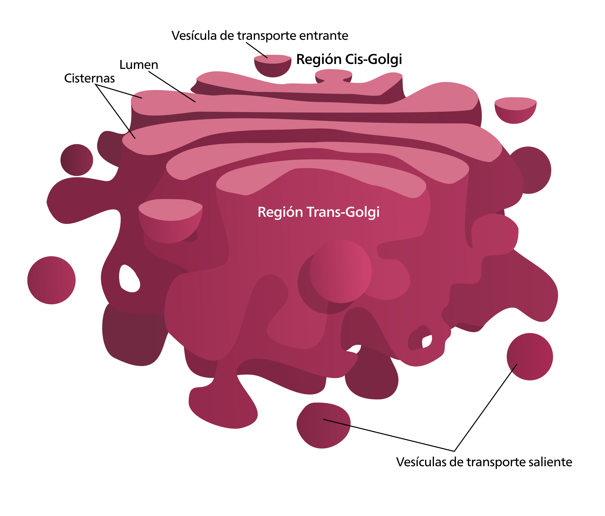

L'Aparell de Golgi
L'Aparell de Golgi és un orgànul membranós format per sàculs aplanats que es disposen de forma paral.lela. La seva funció és la modificació, transport i emmagatzament de proteïnes i lípids.

Formen dictiosomes que són de 40 a 60 sàculs envoltats per una membrana. En els dictiosomes diferenciem dos cares i una zona intermèdia:
-Cara cis o de formació: és la pròxima al nucli i té una composició de membrana similar a RER. Es rebel les proteïnes sintetitzades als ribosomes gràcies a la fusió de vesícules provinent del RER.
-La zona intermèdia; és una zona de transició on es produeixen les modificacions de les proteïnes i es preparen pel transport.
-Cara trans; és la zona pròxima a la membrana plasmàtica i té una composició química semblant. Des d’aquesta zona s’alliberen les proteïnes en vesícules de secreció que poden anar cap a la membrana per ser expulsades o cap a l’estructura cel·lular que li correspongui.